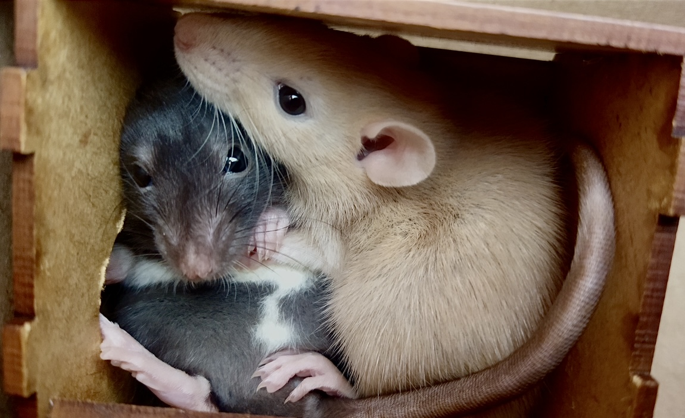
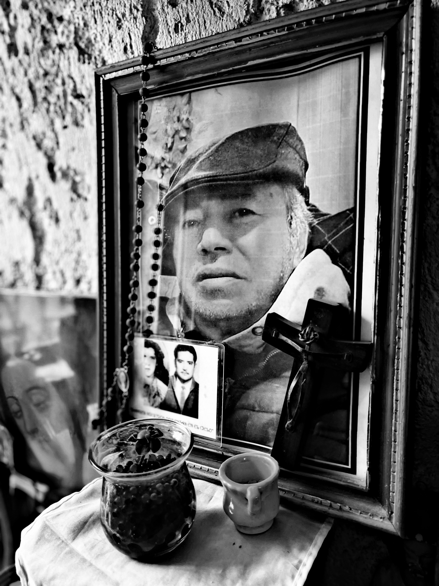

Me gustan mucho los animales, tengo 2 ratitas de mascota, un gato y 3 perros
A parte de ser artista, juego Airsoft (simulacion militar).

Mi papá ya no esta en este mundo, pero fue mi mayor motivación para ser artista y ser buena persona.
Chiquis fue una perrita salchicha que vivió 13 años con nosotros, fue una perrita noble y muy inteligente que queriamos mucho, ahora esta con mi papá.

Las ratas son animales tan lindos y sociables, muy inteligentes, recomiendo 1000% tenerlas de mascota.
Tengo insomnio, y por ende casi siempre estoy muy cansada, entonces siempre pareceré como que no tengo energia.
No suelo ocupar muchos accesorios, pero me encantan los cuarzos y las piedras bonitas.
Uno de mis intereses sobrenaturales más grande, son los aliens y cualquier tipo de vida extraterrestre.
Tengo la creencia de que todos somos energía, entonces me gusta decir o creer que todo existe, todo tipo de dioses y religiones, no me considero creyente de alguna en específico, si no de todas.